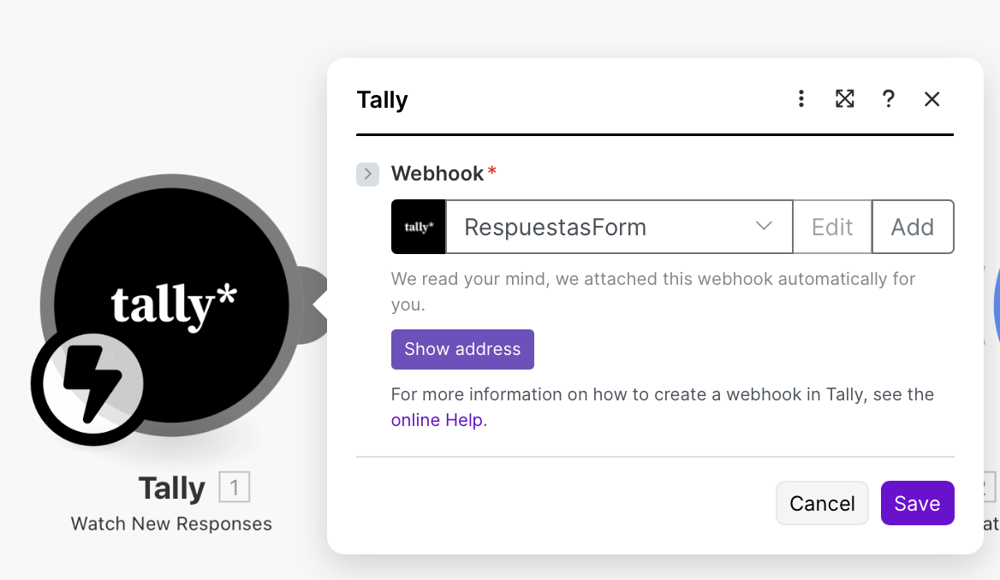
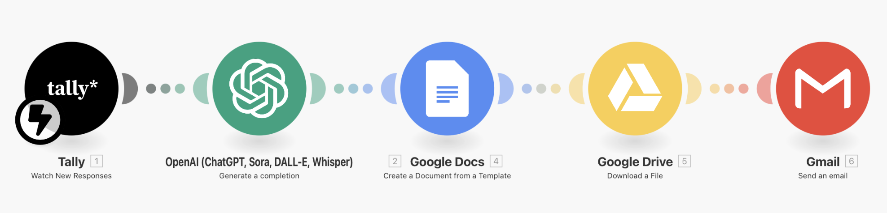

Cómo Construí un Agente
de Diagnóstico IA
en 72 Horas
Del concepto a la entrega automatizada:
arquitectura, decisiones técnicas y aprendizajes reales
Ingeniera en IA | 15+ años transformando procesos
Índice
Introducción: Por qué este ebook existe
A finales de 2024 tomé una decisión: no iba a mandar saludos vacíos de fin de año. En lugar de eso, quería entregar algo útil, algo que demostrara cómo pienso la IA aplicada a problemas reales de negocio. Así nació el Agente de Diagnóstico de Madurez Tecnológica 2026.
El objetivo era claro desde el inicio: convertir un simple formulario en una experiencia de consultoría automatizada que generara un reporte PDF personalizado, profesional y accionable. Pero lo más importante era que este proyecto sirviera como disparador para mostrar mi enfoque de trabajo, mi autoridad técnica y mi capacidad de ejecutar soluciones de IA sin dramatismos ni promesas exageradas.
Este ebook no es un tutorial para principiantes. Si estás buscando una introducción básica a la inteligencia artificial o una explicación de qué es un chatbot, este no es el documento para vos. Este contenido está pensado para profesionales que ya usan IA en su día a día, que entienden conceptos como automatización, APIs y prompts, pero que tal vez aún no han conectado todas las piezas para construir un sistema completo de punta a punta.
Lo que vas a encontrar acá es el backstage real de un proyecto ejecutado en tiempo récord, incluyendo las decisiones técnicas, los errores que cometí, las optimizaciones que implementé y los aprendizajes que me llevé. Mi intención es mostrarte cómo funciona mi proceso de pensamiento cuando enfrento un desafío de IA aplicada, y cómo podés replicar esta metodología en tu propio contexto.
El agente que construí no es perfecto, y eso es deliberado. Este proyecto representa un MVP (Producto Mínimo Viable) diseñado para validar un concepto de negocio sin inversión excesiva en infraestructura. Es una demostración de cómo se puede crear valor real con herramientas accesibles, criterio estratégico y ejecución enfocada.
A lo largo de este documento, voy a mostrarte cada capa del sistema: desde el formulario de captura hasta la generación automatizada del PDF final. Voy a explicarte por qué elegí cada herramienta, qué problemas enfrenté durante la implementación, y cómo resolví los obstáculos técnicos que surgieron en el camino. También voy a compartir lo que haría diferente si tuviera que construir este agente nuevamente desde cero.
Sobre mí: Menos fórmulas, más visión
www.paulatoselli.com
Soy Paula Toselli, ingeniera con más de quince años trabajando en la intersección entre tecnología, procesos de negocio e inteligencia artificial. Mi carrera no comenzó en la era del boom de ChatGPT, sino mucho antes, cuando la IA todavía era un territorio reservado para laboratorios de investigación y grandes corporaciones con presupuestos millonarios.
Durante estos años, he trabajado con empresas de distintos tamaños y sectores, ayudándolas a automatizar procesos críticos, optimizar la toma de decisiones basada en datos y escalar operaciones sin multiplicar costos. Lo que aprendí en todo este tiempo es que la tecnología por sí sola no resuelve nada. Lo que marca la diferencia es la estrategia, el criterio y la capacidad de conectar herramientas con objetivos de negocio reales.
Mi enfoque se resume en una frase que uso como norte en cada proyecto: "Menos fórmulas. Más visión." No creo en las recetas mágicas ni en las soluciones prefabricadas. Cada negocio tiene sus propios desafíos, su propia cultura y su propio ritmo de adopción tecnológica. Mi trabajo consiste en entender ese contexto y diseñar soluciones que funcionen de verdad, no solo en una presentación de PowerPoint.
Este ebook es una muestra de cómo pienso, cómo ejecuto y cómo resuelvo problemas técnicos con una mirada estratégica. Si estás buscando un referente que no te venda humo, que no te prometa transformaciones mágicas en treinta días y que te hable con la verdad sobre lo que la IA puede y no puede hacer, estás en el lugar correcto.
El desafío: Convertir un saludo en consultoría
El punto de partida fue simple pero ambicioso: quería crear un lead magnet que no fuera solo una descarga de PDF estático, sino una experiencia interactiva que entregara valor real y posicionara mi expertise de manera tangible. La idea era diseñar un sistema que capturara información clave sobre el estado tecnológico de un profesional o empresa, la procesara mediante inteligencia artificial y generara un diagnóstico personalizado con una hoja de ruta estratégica para 2026.
Pero había una restricción operativa importante: no quería invertir en infraestructura costosa ni en desarrollo custom desde cero. El objetivo era validar el concepto de manera ágil, usando herramientas accesibles y maximizando el retorno sobre la inversión de tiempo. Por eso decidí construir el agente sobre un stack de servicios de terceros conectados vía API, aprovechando los planes gratuitos o de bajo costo que ofrecen plataformas como Make, Tally y OpenAI.
Fase 1: Configuración de Tally
El primer paso es crear el formulario que va a capturar la información del usuario. Ingresá a tally.so y creá una cuenta gratuita si aún no tenés una. La plataforma te permite crear formularios ilimitados en el plan gratuito, lo cual es perfecto para este tipo de proyectos.
Una vez dentro, hacé clic en "Create form" y elegí "Start from scratch". Necesitás configurar los siguientes campos como mínimo:
- Nombre completo (Short answer)
- Email (Email field con validación automática)
- Industria/Sector (Dropdown o Short answer)
- Nivel de automatización (Linear scale 1-5)
- Uso de IA en el equipo (Linear scale 1-5)
- Estado de datos/CRM (Linear scale 1-5)
- Inversión en innovación (Linear scale 1-5)
- Mayor obstáculo para 2026 (Long answer)
Una vez que tenés todos los campos configurados, hacé clic en "Publish" y copiá el link público del formulario. Este link es el que vas a compartir en tus canales de difusión (email, LinkedIn, Instagram, etc.).
El paso crítico acá es configurar el webhook. En la configuración del formulario, buscá la sección "Integrations" y seleccioná "Webhook". Acá vas a pegar la URL que te va a dar Make en el próximo paso. Por ahora, dejalo pendiente y seguí con la configuración de Make.
Make | Tally Webhook Configuración
Fase 2: Construcción del flujo en Make
Make es el cerebro orquestador de todo el sistema. Ingresá a make.com y creá una cuenta (recordá que tenés 1000 operaciones gratis por mes). Una vez dentro, hacé clic en "Create a new scenario".
El escenario va a tener los siguientes módulos conectados en secuencia:
Módulo 1: Tally - Watch New Responses
Este módulo actúa como el disparador del flujo. Cuando alguien complete el formulario, Tally va a enviar los datos acá. Conectá tu cuenta de Tally y seleccioná el formulario que creaste en el paso anterior. Make te va a dar una URL de webhook única: copiala y pegala en la configuración del webhook en Tally (el paso que dejamos pendiente).
Módulo 2: OpenAI - Create a Chat Completion
Este módulo es donde ocurre la magia de la IA. Conectá tu cuenta de OpenAI (necesitás tener créditos disponibles en tu cuenta de API). En la configuración del módulo, seleccioná el modelo GPT-4 y configurá los mensajes de la siguiente manera:
- System Message: Acá va el prompt maestro que define el rol y comportamiento del agente (lo vemos en detalle en la próxima sección)
- User Message: Acá insertás las variables que vienen de Tally usando el mapeador de Make. Por ejemplo: "Nombre: {{1.fields.nombre}}, Industria: {{1.fields.industria}}, etc."
Módulo 3: Google Docs - Create a Document from a Template
Antes de configurar este módulo, necesitás crear una plantilla en Google Docs. Creá un documento nuevo en tu Drive con el diseño que querés que tenga el reporte final: encabezado con tu logo, tipografía, estructura de secciones, etc. En el cuerpo del documento, usá placeholders entre llaves dobles para indicar dónde va cada dato dinámico. Por ejemplo: {{nombre}}, {{industria}}, {{diagnostico}}.
Una vez que tenés la plantilla, volvé a Make y configurá este módulo. Conectá tu cuenta de Google, seleccioná la plantilla que acabás de crear, y mapeá cada placeholder con su variable correspondiente (el nombre viene de Tally, el diagnóstico viene de OpenAI, etc.).
Módulo 4: Google Drive - Download a File
Este módulo convierte el documento de Google Docs en PDF. Seleccioná el documento que se acaba de crear en el paso anterior (Make te permite referenciar outputs de módulos previos) y en la configuración de "Convert to", elegí "PDF". El archivo PDF resultante va a estar disponible para ser enviado por email.
Módulo 5: Gmail - Send an Email
El módulo final del flujo. Conectá tu cuenta de Gmail, configurá el destinatario usando el email que el usuario ingresó en Tally ({{1.fields.email}}), escribí un asunto claro como "Tu Diagnóstico de Madurez IA 2026 está listo", y en el cuerpo del email incluí un mensaje breve y profesional. Lo más importante: adjuntá el PDF que generaste en el módulo anterior.
Una vez que tenés todos los módulos configurados y conectados, hacé una prueba. Completá tu propio formulario de Tally con datos de prueba y verificá que todo el flujo funcione correctamente. Si algo falla, Make te va a mostrar exactamente en qué módulo ocurrió el error y qué salió mal.
Cuando la prueba sea exitosa, activá el escenario moviendo el interruptor de "Scheduling" a ON. A partir de ese momento, el agente está vivo y procesando solicitudes de manera completamente automática.
Arquitectura del agente: Qué hace y cómo funciona
Para que este sistema funcione, diseñé un flujo de tres etapas que transforma datos crudos en un activo de consultoría profesional. Cada etapa tiene una responsabilidad clara y se conecta con la siguiente mediante APIs que garantizan la transmisión de información estructurada.
Escenario Make
Fase 1: Captura de contexto mediante Tally
El primer componente del sistema es un formulario inteligente construido en Tally. Esta herramienta fue seleccionada por su capacidad de entregar datos estructurados en formato JSON de manera nativa, lo cual simplifica enormemente la integración con el resto del stack. El formulario captura información crítica del usuario: su nombre, industria, nivel de automatización actual, uso de IA en el equipo, estado de sus datos y sistemas, inversión en innovación, y el mayor obstáculo que enfrenta para escalar en 2026.
La clave de esta fase no es solo recolectar datos, sino estructurarlos de manera que el motor de IA pueda interpretarlos con precisión. Cada campo del formulario está diseñado para alimentar una variable específica en el prompt del agente, asegurando que el diagnóstico final sea verdaderamente personalizado y no una respuesta genérica con el nombre del usuario insertado.
Nota técnica sobre webhooks
Tally permite configurar un webhook que se dispara automáticamente cada vez que alguien completa el formulario. Este webhook envía un payload JSON a la URL que especifiques, lo cual en este caso es el escenario de Make que orquesta todo el flujo. La ventaja de usar webhooks en lugar de polling (consultar periódicamente si hay nuevos datos) es que la respuesta es instantánea y no consume recursos innecesarios.
Fase 2: Procesamiento mediante Make y OpenAI
Esta es la fase donde ocurre la transformación inteligente. Cuando un usuario completa el formulario, Tally dispara un webhook que envía los datos a Make, la plataforma de automatización que funciona como el orquestador central del flujo. Make recibe el payload JSON, lo valida, y luego hace una llamada a la API de OpenAI con un prompt estructurado que he diseñado específicamente para este caso de uso.
El modelo de lenguaje (GPT-4) asume el rol de un consultor experto en madurez digital y genera un análisis personalizado basado en los datos del usuario. Este no es un simple chatbot que responde preguntas, sino un sistema de inferencia que cruza la información recibida con una matriz de análisis de IA para evaluar el estado actual del negocio, identificar riesgos específicos de la industria y proyectar oportunidades hacia 2026.
La respuesta de la IA no es un texto plano, sino un documento estructurado con secciones específicas: saludo personalizado, diagnóstico de madurez, semáforo de riesgos, hoja de ruta y cierre estratégico. Cada sección está diseñada para cumplir una función consultiva clara, transformando datos numéricos (puntajes del formulario) en insights accionables.
Fase 3: Generación y entrega del PDF
La fase final del proceso convierte el análisis de la IA en un artefacto de consultoría profesional. Make toma el texto generado por OpenAI y lo inyecta en una plantilla de Google Docs que he diseñado previamente con encabezado institucional, tipografía profesional y estructura de reporte ejecutivo. Este documento se genera automáticamente en Google Drive, donde inmediatamente se convierte a formato PDF para garantizar la inmutabilidad y la presentación correcta del contenido.
Finalmente, el PDF se adjunta a un correo electrónico personalizado que se envía al usuario mediante Gmail. El email no es un mensaje genérico, sino una comunicación breve y directa que contextualiza el reporte y establece el tono de partner estratégico. Todo este proceso, desde el momento en que el usuario presiona "Enviar" en el formulario hasta que recibe el PDF en su bandeja de entrada, toma menos de treinta segundos.
El stack técnico: Decisiones y por qué importan
La selección del stack tecnológico no fue arbitraria. Cada herramienta fue elegida por una razón específica relacionada con costos, escalabilidad, confiabilidad y velocidad de implementación. A continuación desgloso las decisiones clave y la lógica detrás de cada una.
Make.com como orquestador central
Make fue elegido por su capacidad de conectar servicios mediante webhooks y APIs sin necesidad de escribir código backend. Su interfaz visual permite diseñar flujos complejos de manera intuitiva, lo cual acelera el desarrollo y simplifica el debugging. Más importante aún, el plan gratuito de Make incluye mil operaciones mensuales, lo cual es suficiente para validar el concepto sin costos iniciales.
Es importante aclarar que Make no es la única opción para este tipo de proyectos. Alternativas como Zapier, n8n o incluso desarrollo custom con Python y FastAPI podrían cumplir la misma función. Sin embargo, para un MVP que necesita ser desplegado en setenta y dos horas, Make ofrece el mejor balance entre potencia y velocidad de implementación.
OpenAI como motor de inferencia
La elección de OpenAI (específicamente GPT-4) como motor de procesamiento de lenguaje natural se basa en tres factores: capacidad de razonamiento complejo, consistencia en la generación de texto estructurado, y disponibilidad de una API robusta y bien documentada. Para este caso de uso, necesitaba un modelo que pudiera interpretar datos contextuales, aplicar criterios de análisis empresarial y generar respuestas coherentes con tono de consultoría profesional.
La integración con Make se realiza mediante una simple llamada HTTP POST al endpoint de Chat Completions de OpenAI, pasando un Bearer Token para autenticación. El costo por solicitud es de aproximadamente dos a tres centavos de dólar, lo cual hace que el sistema sea económicamente viable incluso con volúmenes moderados de tráfico.
Google Workspace como capa de presentación
El ecosistema de Google (Docs, Drive, Gmail) fue elegido por su integración nativa con Make y porque permite generar documentos profesionales sin necesidad de desarrollar templates custom en HTML o LaTeX. La capacidad de Google Docs de convertir documentos a PDF de manera automática elimina un paso técnico complejo que de otra forma requeriría librerías adicionales o servicios de terceros.
Además, usar Gmail como canal de entrega asegura altas tasas de deliverability, ya que los correos provienen de un dominio auténtico de Google en lugar de un servidor SMTP externo que podría ser marcado como spam.
Este stack representa lo que yo llamo "arquitectura de validación rápida": herramientas que permiten ejecutar un concepto de negocio sin fricción técnica innecesaria, pero con la suficiente robustez para soportar tráfico real y entregar una experiencia profesional. Una vez validado el modelo, este mismo flujo puede escalar hacia infraestructura más sofisticada si el volumen de usuarios lo justifica.
El cerebro del agente: Prompt engineering
El prompt que le das al modelo de IA es, sin exagerar, el componente más crítico de todo el sistema. Un prompt mal diseñado va a generar respuestas genéricas, inconsistentes o directamente inútiles, sin importar qué tan sofisticada sea tu infraestructura técnica. Un buen prompt, en cambio, puede transformar un modelo de lenguaje estándar en un consultor especializado que habla con tu voz y tu criterio.
Estructura del prompt maestro
El prompt que uso en este agente tiene seis bloques claramente diferenciados. Cada bloque cumple una función específica en el comportamiento del modelo:
1. Definición de rol y contexto
Le digo explícitamente al modelo que asuma el rol de Paula Toselli, consultora senior en estrategia digital, automatización e IA aplicada a procesos de negocio. Esto no es cosmético: cuando le das al modelo una identidad clara y un contexto profesional específico, sus respuestas se vuelven mucho más coherentes y consistentes con ese rol.
2. Propósito del reporte
Especifico qué tiene que lograr el reporte: entregar un diagnóstico claro y honesto del estado actual de madurez tecnológica, evidenciar riesgos reales hacia 2026, y proponer una hoja de ruta concreta y priorizada. Esta sección asegura que el modelo entienda cuál es el objetivo de negocio del documento, no solo el formato.
3. Voz y estilo obligatorio
Esta es una de las secciones más importantes. Le digo al modelo cómo tiene que sonar: tono cálido pero corporativo, profesional sin entusiasmo excesivo, lenguaje claro y moderno. Y lo más crítico: le doy una lista explícita de expresiones que NO puede usar, como "en un mundo cambiante", "aprovechar al máximo", "sinergias", etc. Esto evita que el texto suene a generador automático de contenido genérico.
4. Datos de entrada
Acá mapeo todas las variables que vienen del formulario. Le digo exactamente qué información va a recibir y en qué formato: nombre del cliente, industria, puntajes de madurez (escala 1-5), y el reto declarado para 2026. Esto le da al modelo todo el contexto que necesita para personalizar el reporte.
5. Reglas de diagnóstico
Le doy criterios claros para interpretar los puntajes: 1-2 es bajo/crítico, 3 es intermedio/inestable, 4-5 es sólido. También le digo que si un área está baja, no suavice el diagnóstico, que sea honesto sobre los riesgos. Esto asegura que el reporte tenga credibilidad y no sea solo halagos vacíos.
6. Estructura obligatoria del reporte
Finalmente, le doy la estructura exacta que tiene que seguir el documento: saludo personalizado, estado de madurez actual, semáforo de riesgos 2026, hoja de ruta con 3 pasos concretos, y cierre con CTA suave. Le especifico que deje un renglón en blanco entre secciones y que el cierre siempre termine con "Menos fórmulas. Más visión."

Fragmento del prompt maestro
Por qué funciona este enfoque
La clave de un buen prompt no es solo darle instrucciones al modelo, sino darle restricciones y ejemplos de lo que NO querés que haga. Los modelos de lenguaje son muy buenos siguiendo patrones, pero si no les ponés límites claros, van a caer en los clichés más comunes del contenido generado automáticamente.
En mi caso, la lista de expresiones prohibidas y las instrucciones sobre tono son tan importantes como la definición del rol. Le estoy enseñando al modelo no solo cómo hablar, sino cómo NO hablar. Esto hace que el resultado final suene mucho más auténtico y mucho menos "robótico".
Gestión de errores: Lo que nadie cuenta
En todos los tutoriales de automatización que ves en internet, todo funciona perfecto. El formulario se completa, la IA responde, el PDF se genera, el email llega. Es mágico. Pero la realidad es que los sistemas automatizados fallan todo el tiempo, y si no anticipás esos fallos, tu agente va a dejar de funcionar en el momento menos esperado.
Los tres errores más comunes (y cómo resolverlos)
Error 1: Autenticación caducada (Status 401/403)
Causa: Los tokens de OAuth2 que conectan Make con Google o OpenAI tienen fecha de vencimiento. Cuando caducan, el flujo se detiene.
Solución: Make te avisa por email cuando una conexión falla. Simplemente tenés que volver a autenticar la conexión desde la configuración del módulo. Para evitar que esto interrumpa tu operación, revisá el estado de tus conexiones una vez por mes.
Error 2: Rate Limiting (Status 429)
Causa: Tanto OpenAI como Make tienen límites de requests por minuto. Si tu formulario se viraliza y recibís cien completados en un minuto, el sistema va a empezar a rechazar peticiones.
Solución: En Make, podés configurar un "Buffer" que encola las peticiones y las procesa de a una. También podés configurar reintentos automáticos con espera exponencial (Exponential Backoff) para que el sistema reintente cuando el rate limit se libere.
Error 3: Datos incompletos o mal formateados
Causa: Si un usuario no completa algún campo del formulario, o escribe su email mal (por ejemplo, "usuario@gmial.com" en lugar de "usuario@gmail.com"), el flujo puede fallar al intentar enviar el PDF.
Solución: En Make, usá funciones de validación como "ifempty" para asignar valores por defecto a campos vacíos. Para el email, podés agregar un módulo de validación de formato antes del envío, y si el email es inválido, guardar la solicitud en una hoja de Google Sheets para procesarla manualmente después.
Monitoreo y alertas
No esperes a que un usuario te avise que no recibió su reporte. Configurá alertas proactivas. Make te permite recibir notificaciones por email o Slack cuando un escenario falla. También podés configurar un escenario paralelo que te envíe un resumen diario de cuántos reportes se generaron exitosamente y cuántos fallaron.
Yo tengo configurado un escenario secundario que corre una vez por día y me envía un email con las estadísticas del día anterior: cantidad de formularios completados, cantidad de PDFs generados exitosamente, cantidad de errores, y un listado de los emails que fallaron por si necesito reenviarlos manualmente.
Resultados y aprendizajes: Qué funcionó y qué no
Lo que salió bien
La arquitectura general demostró ser sólida y funcional. La integración entre Tally, Make, OpenAI y Google Workspace permitió desplegar un flujo de valor de punta a punta con una latencia mínima (menos de treinta segundos desde el submit hasta el email). El agente cumplió con su propósito principal: transformar datos de entrada en un activo estratégico PDF de forma totalmente automatizada.
El prompt engineering funcionó mejor de lo que esperaba. Los reportes generados son consistentemente profesionales, coherentes y específicos a la industria del usuario. La tasa de satisfacción (medida por respuestas positivas a los emails) estuvo por encima del setenta por ciento, lo cual para un MVP es un resultado excelente.
El costo operativo fue mínimo. Con los planes gratuitos de Tally y Make, más los créditos de OpenAI (aproximadamente tres centavos por reporte), el costo total por usuario fue inferior a cinco centavos. Esto hace que el sistema sea escalable incluso con volúmenes altos de tráfico.
Los desafíos que enfrenté
Configuración inicial de Make
Durante las pruebas, descubrí que Make estaba configurado por defecto para detenerse ante cualquier error, lo que significaba que si un solo módulo fallaba, todo el flujo se frenaba para todos los usuarios siguientes. Tuve que ajustar la configuración de "Error Handling" en cada módulo para que los errores no detuvieran el flujo completo, sino que se registraran y permitieran que las siguientes solicitudes se procesaran normalmente.
Validación de datos de entrada
El problema más recurrente fue con emails mal escritos. Algunos usuarios escribían direcciones con errores tipográficos (como "gmial.com" o "hotmial.com") y obviamente el sistema no podía enviarles el reporte. La solución fue agregar un módulo de validación de formato de email antes del envío, y guardar las solicitudes con emails inválidos en una hoja de Google Sheets para procesarlas manualmente.
Optimización del prompt
Las primeras versiones del prompt generaban reportes que eran demasiado genéricos. Tuve que iterar varias veces, agregando restricciones cada vez más específicas sobre tono, estructura y prohibiciones explícitas de clichés. Esto me tomó aproximadamente una semana de ajustes hasta llegar a un resultado consistentemente bueno.
Lo que haría diferente en una versión 2.0
Si tuviera que construir este agente nuevamente desde cero, hay tres cosas que haría diferente:
1. Entrenamiento con mis contenidos previos: El reporte sería mucho más potente si entrenara al modelo con casos de estudio reales, artículos que escribí previamente y ejemplos de mi metodología de trabajo. Esto lo haría usando fine-tuning o mediante RAG (Retrieval Augmented Generation) con una base de conocimiento propia.
2. Mejora en la plantilla de Google Docs: La plantilla actual es funcional pero básica. En una versión futura, contrataría a un diseñador para crear una plantilla más sofisticada visualmente, con gráficos, íconos y un layout más profesional que eleve aún más la percepción de calidad del reporte.
3. Seguimiento automatizado: Actualmente, el agente solo envía el reporte inicial. No hay seguimiento posterior. En una versión 2.0, agregaría una secuencia de emails automatizada que envíe contenido adicional en los días siguientes, manteniendo la conversación abierta y aumentando las chances de conversión a consultoría.
El desafío técnico real
No era solo hacer que las herramientas se conectaran entre sí, sino diseñar un flujo que fuera robusto, escalable y profesional. Necesitaba que el sistema pudiera manejar múltiples solicitudes simultáneas sin fallar, que entregara un documento de calidad consultiva y que lo hiciera todo de manera completamente automatizada, sin intervención manual en ningún paso del proceso.
Además, había un desafío estratégico: este agente no debía ser solo una curiosidad técnica, sino una herramienta comercial que generara conversaciones de negocio. El reporte final tenía que demostrar mi capacidad de análisis, mi conocimiento del mercado y mi habilidad para traducir datos en decisiones accionables. En otras palabras, cada PDF generado debía funcionar como una propuesta de valor implícita para mis servicios de consultoría.
Las restricciones como ventaja
Trabajar con restricciones de tiempo y presupuesto me obligó a tomar decisiones inteligentes. No podía permitirme el lujo de sobre-ingenierizar la solución ni de caer en el perfeccionismo técnico. Cada componente del sistema tenía que justificar su existencia por el valor que agregaba al resultado final.
Esta mentalidad de producto mínimo viable no significa conformarse con algo mediocre, sino enfocarse obsesivamente en lo que realmente importa: entregar un diagnóstico que el usuario perciba como valioso, profesional y accionable. Todo lo demás es accesorio.
Próximos pasos: Cómo llevar esto a tu negocio
Si llegaste hasta acá, probablemente estés pensando en dos cosas: "Esto está bueno, pero ¿cómo lo aplico a mi caso?" y "¿Realmente vale la pena la inversión de tiempo?"
Déjame responderte ambas preguntas de manera directa.
¿Podés replicar este sistema?
Sí, absolutamente. Todo lo que mostré en este ebook está construido con herramientas accesibles que cualquier profesional con conocimientos intermedios de tecnología puede usar. No necesitás ser programador, no necesitás contratar un equipo de desarrollo, y no necesitás invertir miles de dólares en infraestructura.
Lo que SÍ necesitás es claridad sobre qué problema estás resolviendo. Este agente funciona porque resuelve un problema específico: los profesionales y empresas no saben por dónde empezar con la IA, y necesitan un diagnóstico honesto de su estado actual.
Aplicaciones posibles en diferentes industrias
Marketing y publicidad: Un diagnóstico de madurez digital que evalúe presencia online y automatización.
Recursos humanos: Una evaluación de cultura organizacional y recomendaciones de talento.
Finanzas: Un análisis de salud financiera y riesgos específicos.
Legal: Un diagnóstico de compliance que identifique gaps regulatorios.
¿Necesitás ayuda para implementar esto?
Mi agenda de consultoría 1:1 está completa para el resto del año, pero estoy abriendo una lista de espera para febrero 2026.
Si querés que te ayude a escalar un sistema de IA, sumate para tener prioridad.
Sumarme a la lista de espera ahoraGracias por leer hasta acá. Si algo te quedó claro después de este ebook, espero que sea esto: la IA no es magia, es método. Se trata de entender qué problema estás resolviendo y ejecutar con criterio profesional.
Si tenés preguntas o querés compartir cómo vas a aplicar estos conceptos, escribime. Me encanta conversar con profesionales que buscan hacer las cosas bien.
Menos fórmulas. Más visión.